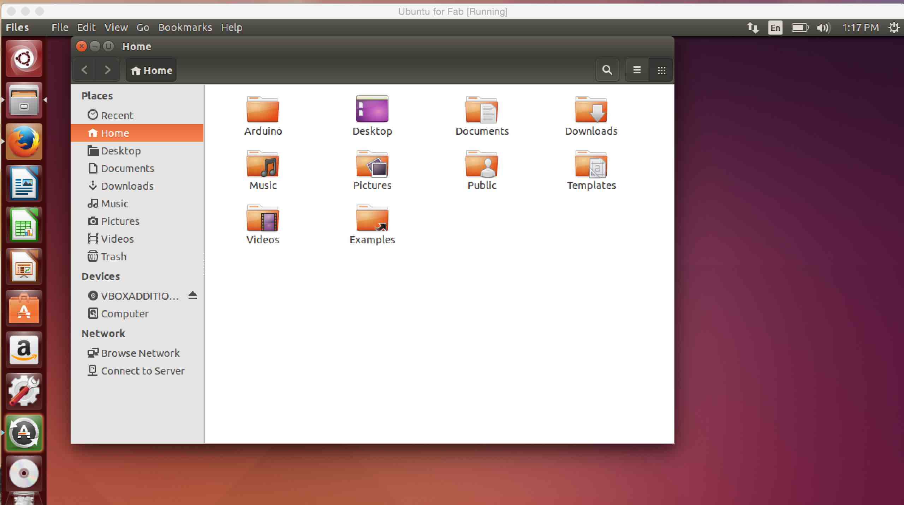

| Home | | Week 1 | | Week 2 | | Week 3 | | Week 4 |
My documentation of the stuff I learned at Pre Fab Workshop.
Week 1
Setting up the Lab
Luciano Betoldi, Our PreFab trainer, started off the course by rearranging and cleaning the lab is the best way to suit the Pre Fab course. This was followed by a self introductions session..
Introduction to FabLab and Pre Fab Academy course
FabLab is a lab which has interesting computer controlled instruments which can be used to make almost anything. As of now, FabLab cannot be used for mass manufacturing, but for prototyping innovative products. Now Fablab is a collaborative global network spread across many countries. As per records, there are a total of 565 FabLabs around the world. And we have two here in Kerala and I am lucky to be a part FabLab Kochi. I am truly looking forward to make a Fab movement in Kerala.
Fab Academy happens every year from January to June 2016. The online interactive classes are conducted by Prof. Neil Gershenfeld, the co-founder of FabLab, every Wednesday in between this period. Assignments will be give to participants
As my documentation website was not live. Francisco shared a catch up plan and I was asked to make the website live before I leave the lab. The website is live now and all my documentation for the previous weeks needs to be added.
Assignement: Ubuntu on Virtual Box
The fab modules for using FabLab machines/equipments runs best on Ubuntu and I have always adored Ubuntu and all the open source stuff. But I have been using mac for quite sometime now for my work and I haven’t got the time to explore and play around with Ubuntu.
I took this opportunity to install virtual ubuntu on my mac using virtual box. Virtual Box virtual machine is a free virtualisation software by Oracle that can be downloaded from the internet. This allows you to install and run ubuntu on top of my mac.
The method to get is done is fairly simple.
1. Download the Virtual Box Software from the web, Install it.
2. Download the ubuntu installation iso file from the web.
3. Install it on mac through virtual box.
Downloaded and installed Virtual Box from link:
https://www.virtualbox.org/wiki/Downloads

Downloaded Ubuntu 14.04.3 LTS from link: http://www.ubuntu.com/download/desktop
Installed Ubuntu on Virtual Box
All I had to to do was to press the start button and Ubuntu was up an running on a seperate window in OSX. To my surprise, its running pretty smoothly. Thanks to the 8GB RAM on my macbook. :) 